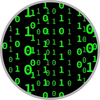

Home Page
CV, bio, lists of talks, papers, venues, contact details
UT TCS BSc+MSc
an integrated (under)graduate university programme in Enschede
Projects
funded collaborative initiatives from the past and the present

Artefacts
concrete coding repositories, packages, tools and frameworks
Events
events, conferences, workshops, coding dojos, etc
Wikipedia
occasionally contributing to the sum of all knowledge
Twitter
keeping in touch with the research community (2007–2021)
UvA MSc SE
a one-year university graduate programme in Amsterdam
Software Language Engineering Glossary
superseded by SLEBoK terms
The page is maintained by
Dr. Vadim Zaytsev
a.k.a. @
grammarware
. Dim tiles refer to past projects. See
copyright disclaimer
.
Last updated: July 2025.